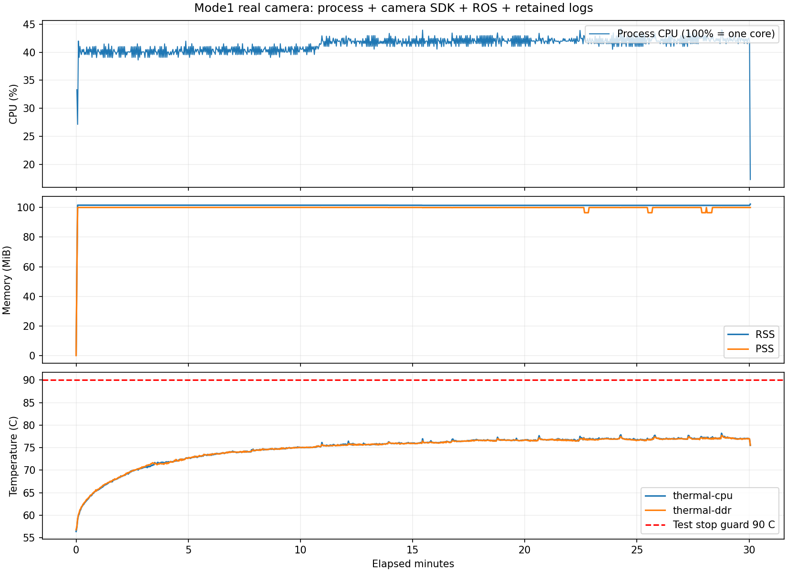

X5 mode1 黑暗场景识别压力测试
板子 [设备序列号已省略] · 主机估算起始时间 2026-11-18 09:18:44（北京时间） · 测试范围：V1 mode1 SDK 独立 demo
mode1 规则与生命周期检查通过，但相机 SDK 链路存在告警。真实相机连续运行的结果逐帧与曝光阈值复核；高频、阈值边界、无效输入、超时失效和启停另行验证。该结论覆盖本次时长和场景，不等于 24 小时可靠性或实际照度分类准确率认证。
先看结论
测试的是哪套代码
使用先前交付 mode1 的同一个 libdark_scene.so，SHA256：9ca9288a5b940f428baaa5d39224a9205861cdf13a5071cda8e98110abd6e7c0。检测逻辑未修改：曝光 ≥10 ms 且模拟增益 ≥8 → NIGHT / 建议开灯；其余有效 AE → DAY / 建议关灯。mode1 每条有效输入判断一次，没有时序投票防抖。
真实相机路径：moGetOneOrgFrame → 左目 AE → 归还左右图 → feedExposure → 工作队列 → ROS 结果/补光建议 → 订阅留痕。相机 SDK 为 1.4.7.12。日志按帧保存，控制台仅 2 Hz。模式算法不使用 RAW 图、不运行 BPU 模型。
控制输入另测 feedCameraShmFrame 的公开 CameraData 字节解码接口。这是接口级字节回放；本次没有启动实际业务共享内存生产者，没有验证完整 V1 宿主或完整 V2 负载。仅发布隔离域中的补光建议，没有操作真实灯。
30 分钟真实相机稳定性
所有保留的输入与结果逐帧核对 frame_id、timestamp、曝光、增益、类别、is_dark、stable，并核对补光建议只在首个确认及状态改变时发布。SDK 借图 19,991 次、归还 19,991 次，归还错误 0，关闭返回 0。启动时未就绪 AE 1 帧单独计数。
本次 11.11 帧/秒是该 SDK/配置的输入送达速率，不是 mode1 吞吐上限。输入输出数相同只能证明已收到的有效 AE 有对应结果，不能证明相机底层一帧都没有丢。

资源图包含相机 SDK、ROS、线程及按帧写日志，不能把整个进程 CPU/RSS 直接归因于两个阈值比较。100% CPU 表示占满一个核心；机器为 8 核。剔除前 60 秒的 RSS 拟合斜率为 -0.007178 MiB/分钟，仅作本次观察描述。短时内存平稳不能证明长期绝无泄漏；驱动缓冲另核对 DMA 统计和相机关闭后状态。
全局 DMA 缓冲对象数：启动前 0，应用退出后 0。该统计含内核和其他进程，不能全部算作 mode1 私有内存；更多字节数与 CMA 数据保留在指标 JSON。启动前后数量相同也不能排除本轮之外的历史残留。
峰值温度 78.20°C；测试自行设置 90°C 停止保护，系统只读记录的 passive 阈值为 95°C。这是本次工程停止线，不作为厂家温度规格。板上日历时钟仍在 2000 年，统计使用单调时钟，报告起始时间由主机时间锚点估算，没有调整系统时钟。
高频、超载和边界测试
入队 API 时间只覆盖调用耗时；“收到结果”从调用开始计到本进程 ROS 订阅回调，包含排队、策略、序列化和通信，不是纯阈值比较时间。测试包含完整 JSON 留痕，其开销也在进程资源中。阈值案例包括 (9.999,8)、(10,7.999)、(10,8)、(10.001,8.001) 等。补光建议共 37,280 条，其中 ON 18,640 条，按对应输入与完整状态变化序列独立复核。
套件资源每 1 秒采样；20 万条突发阶段仅持续 1.838 秒，其 CPU 统计仅有 1 个采样，不能当作长期稳态值。接口级 CameraData 阶段的调用时间包含测试驱动填写帧头的少量开销。
超载时容量为 32 的适配队列保留较新的数据，主动丢弃旧输入。本次主动丢弃 182,308 条；除适配丢弃和无效输入外，结果数量未解释差额为 0 条。不能把超载吞吐称为“每帧保证输出”。突发结束后 30 Hz 恢复阶段单独检查。
重复帧、倒序时间戳、倒序帧号、零/负曝光、零增益、NaN、Inf 共 8 条 AE 被拒绝。停输入 4 秒后收到 UNKNOWN / is_dark=null，期间补光建议 0 条；随后恢复输入。CameraData 空指针、短包、长包、错误宽度、零时间戳、无效 AE 共 8 项另行核对。
相机反复启停与退出
发现的问题
相机 SDK 内部归还 ISP 帧异常：真实相机长跑日志中 hbn_vnode_releaseframe failed 共 124 次，返回码分布 {'-45': 124}，全部位于 isp|mipi=1（本配置右目）。该时段保留的内核日志中 invalid frame state 共 124 次。它与应用调用 moReleaseOrgFrame 的返回值是两个层次；后者成功不代表 SDK 内部没有错误。错误次数也不能直接除以左目 AE 输入帧数当作丢帧率。本次未观察到因此退出或 mode1 结果错误，但不能据此宣布相机链路完全正常。需进一步由相机 SDK 方检查 ISP 帧归还时序、缓冲区所有权和线程配合；现有证据不能确定其根因，也不能直接认定已经造成泄漏。
SDK 初始化还出现 HBRT 运行库 3.15.54.0 与模型构建库 3.15.55.0 版本不一致提示，且在 bpu_enable:0 下仍打印模型加载。mode1 规则自身没有运行该模型；建议后续核对 SDK 初始化是否能跳过不用的模块、统一模型工具链版本。本次未修改厂家 SDK。
结果 JSON 的 metadata_source/exposure_input 仍沿用库中固定的共享内存来源标签。本轮真实相机实际从 SDK 直接读 AE，以 run.json、camera_opened.json 和驱动调用路径为准，不能仅看该固定标签判断来源。feature_ms/classification_ms 是 RAW 分类器字段，mode1 为零也不代表 mode1 无耗时；本报告使用独立计时。
使用限制
① 本次物理场景曝光范围 10.0000～10.0000 ms、增益 1.6105～2.5937。真实 NIGHT 帧数 0；真实环境开灯切换若未发生，不能用注入结果替代实际照明场景验证。
② mode1 的 DAY 表示“两个 AE 条件未同时达到阈值”，并非测得场景明亮。没有照度真值，本次不报告低光识别准确率。接入时还应确认 SDK 实际上限读数是否能达到 8.0；7.999 按当前规则仍判 DAY。
③ mode1 没有防抖，AE 在阈值两侧跳动时结果和补光建议会随之切换。超载会有计划地丢旧数据；若业务要求每条输入完整处理，需要另定限速或流控策略。
④ 本次为 30 分钟单功能压力验证。整机检测、分割、双目、地图共同运行时的资源竞争、实际共享内存业务通道、拔插/断电、24 小时及多光照场景仍需独立测试。
审计结果与复测入口
{
"camera_errors": [],
"probe_errors": [],
"light_errors": 0,
"unaccounted_results": 0,
"lifecycle_errors": {}
}
完整计算指标 JSON · 相机运行摘要 · 高频与启停摘要 · 原始资源记录 · 复测脚本说明
所有数据位于本报告上级 evidence/，拉取时逐文件 SHA256 核验。真实运行和控制注入串行进行，避免彼此影响。未修改算法库、系统服务或生产配置。